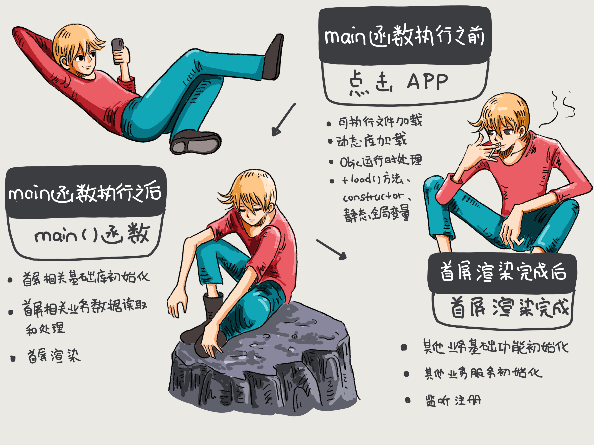
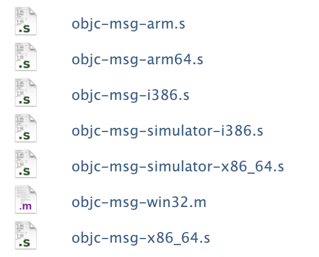
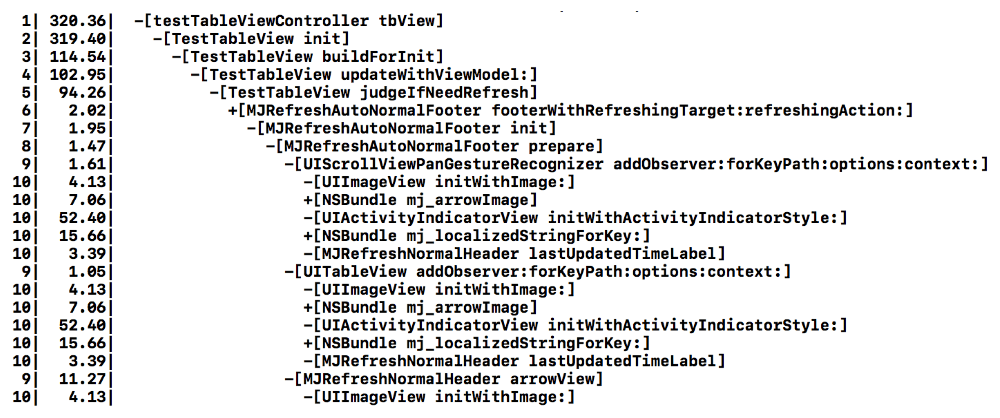

- 00 开篇词 锚定一个点，然后在这个点上深耕.md.html
- 01 建立你自己的iOS开发知识体系.md.html
- 02 App 启动速度怎么做优化与监控？.md.html
- 03 Auto Layout 是怎么进行自动布局的，性能如何？.md.html
- 04 项目大了人员多了，架构怎么设计更合理？.md.html
- 05 链接器：符号是怎么绑定到地址上的？.md.html
- 06 App 如何通过注入动态库的方式实现极速编译调试？.md.html
- 07 Clang、Infer 和 OCLint ，我们应该使用谁来做静态分析？.md.html
- 08 如何利用 Clang 为 App 提质？.md.html
- 09 无侵入的埋点方案如何实现？.md.html
- 10 包大小：如何从资源和代码层面实现全方位瘦身？.md.html
- 11 热点问题答疑（一）：基础模块问题答疑.md.html
- 12 iOS 崩溃千奇百怪，如何全面监控？.md.html
- 13 如何利用 RunLoop 原理去监控卡顿？.md.html
- 14 临近 OOM，如何获取详细内存分配信息，分析内存问题？.md.html
- 15 日志监控：怎样获取 App 中的全量日志？.md.html
- 16 性能监控：衡量 App 质量的那把尺.md.html
- 17 远超你想象的多线程的那些坑.md.html
- 18 怎么减少 App 电量消耗？.md.html
- 19 热点问题答疑（二）：基础模块问题答疑.md.html
- 20 iOS开发的最佳学习路径是什么？.md.html
- 21 除了 Cocoa，iOS还可以用哪些 GUI 框架开发？.md.html
- 22 细说 iOS 响应式框架变迁，哪些思想可以为我所用？.md.html
- 23 如何构造酷炫的物理效果和过场动画效果？.md.html
- 24 A_B 测试：验证决策效果的利器.md.html
- 25 怎样构建底层的发布和订阅事件总线？.md.html
- 26 如何提高 JSON 解析的性能？.md.html
- 27 如何用 Flexbox 思路开发？跟自动布局比，Flexbox 好在哪？.md.html
- 28 怎么应对各种富文本表现需求？.md.html
- 29 如何在 iOS 中进行面向测试驱动开发和面向行为驱动开发？.md.html
- 30 如何制定一套适合自己团队的 iOS 编码规范？.md.html
- 31 iOS 开发学习资料和书单推荐.md.html
- 32 热点问题答疑（三）.md.html
- 33 iOS 系统内核 XNU：App 如何加载？.md.html
- 34 iOS 黑魔法 Runtime Method Swizzling 背后的原理.md.html
- 35 libffi：动态调用和定义 C 函数.md.html
- 36 iOS 是怎么管理内存的？.md.html
- 37 如何编写 Clang 插件？.md.html
- 38 热点问题答疑（四）.md.html
- 39 打通前端与原生的桥梁：JavaScriptCore 能干哪些事情？.md.html
- 40 React Native、Flutter 等，这些跨端方案怎么选？.md.html
- 41 原生布局转到前端布局，开发思路有哪些转变？.md.html
- 42 iOS原生、大前端和Flutter分别是怎么渲染的？.md.html
- 43 剖析使 App 具有动态化和热更新能力的方案.md.html
- 用户故事 我是如何学习这个专栏的？.md.html
- 结束语 慢几步，深几度.md.html
- 捐赠
02 App 启动速度怎么做优化与监控？
你好，我是戴铭。
我已经在专栏的第一篇文章中，和你梳理了一份iOS开发的知识体系框架图。今天，我们就正式从基础出发，开始自己的iOS开发知识体系构建之路吧。接下来，我就先和你聊聊与App启动速度密切相关的那些事儿。希望你听我说完启动速度的事儿之后，在专栏里的学习状态也能够快速地启动起来。
在文章开始前，我们先设想这么一个场景：假设你在排队结账时，掏出手机打开App甲准备扫码支付，结果半天进不去，后面排队的人给你压力够大吧。然后，你又打开App乙，秒进，支付完成。试想一下，以后再支付时你会选择哪个App呢。
不难想象，在提供的功能和服务相似的情况下，一款App的启动速度，不单单是用户体验的事情，往往还决定了它能否获取更多的用户。这就好像陌生人第一次碰面，第一感觉往往决定了他们接下来是否会继续交往。
由此可见，启动速度的优化必然就是App开发过程中，不可或缺的一个环节。接下来，我就先和你一起分析下App在启动时都做了哪些事儿。
App 启动时都干了些什么事儿？
一般情况下，App的启动分为冷启动和热启动。
- 冷启动是指， App 点击启动前，它的进程不在系统里，需要系统新创建一个进程分配给它启动的情况。这是一次完整的启动过程。
- 热启动是指 ，App 在冷启动后用户将 App 退后台，在 App 的进程还在系统里的情况下，用户重新启动进入 App 的过程，这个过程做的事情非常少。
所以，今天这篇文章，我们就只展开讲App冷启动的优化。
用户能感知到的启动慢，其实都发生在主线程上。而主线程慢的原因有很多，比如在主线程上执行了大文件读写操作、在渲染周期中执行了大量计算等。但是，有时你会发现即使你把首屏显示之前的这些主线程的耗时问题都解决了，还是比竞品启动得慢。
那么，究竟如何才能把启动时的所有耗时都找出来呢？解决这个问题，你首先需要弄清楚 App在启动时都干了哪些事儿。
一般而言，App的启动时间，指的是从用户点击App开始，到用户看到第一个界面之间的时间。总结来说，App的启动主要包括三个阶段：
main() 函数执行前；
main() 函数执行后；
首屏渲染完成后。
整个启动过程的示意图，如下所示：

图1 App的整个启动过程
main() 函数执行前
在 main() 函数执行前，系统主要会做下面几件事情：
- 加载可执行文件（App的.o文件的集合）；
- 加载动态链接库，进行 rebase 指针调整和 bind 符号绑定；
- Objc 运行时的初始处理，包括 Objc 相关类的注册、category 注册、selector 唯一性检查等；
- 初始化，包括了执行 +load() 方法、attribute((constructor)) 修饰的函数的调用、创建 C++ 静态全局变量。
相应地，这个阶段对于启动速度优化来说，可以做的事情包括：
- 减少动态库加载。每个库本身都有依赖关系，苹果公司建议使用更少的动态库，并且建议在使用动态库的数量较多时，尽量将多个动态库进行合并。数量上，苹果公司建议最多使用 6 个非系统动态库。
- 减少加载启动后不会去使用的类或者方法。
- +load() 方法里的内容可以放到首屏渲染完成后再执行，或使用 +initialize() 方法替换掉。因为，在一个 +load() 方法里，进行运行时方法替换操作会带来 4 毫秒的消耗。不要小看这4毫秒，积少成多，执行+load() 方法对启动速度的影响会越来越大。
- 控制C++ 全局变量的数量。
main() 函数执行后
main() 函数执行后的阶段，指的是从main()函数执行开始，到appDelegate 的 didFinishLaunchingWithOptions 方法里首屏渲染相关方法执行完成。
首页的业务代码都是要在这个阶段，也就是首屏渲染前执行的，主要包括了：
- 首屏初始化所需配置文件的读写操作；
- 首屏列表大数据的读取；
- 首屏渲染的大量计算等。
很多时候，开发者会把各种初始化工作都放到这个阶段执行，导致渲染完成滞后。更加优化的开发方式，应该是从功能上梳理出哪些是首屏渲染必要的初始化功能，哪些是 App 启动必要的初始化功能，而哪些是只需要在对应功能开始使用时才需要初始化的。梳理完之后，将这些初始化功能分别放到合适的阶段进行。
首屏渲染完成后
首屏渲染后的这个阶段，主要完成的是，非首屏其他业务服务模块的初始化、监听的注册、配置文件的读取等。从函数上来看，这个阶段指的就是截止到 didFinishLaunchingWithOptions 方法作用域内执行首屏渲染之后的所有方法执行完成。简单说的话，这个阶段就是从渲染完成时开始，到 didFinishLaunchingWithOptions 方法作用域结束时结束。
这个阶段用户已经能够看到 App 的首页信息了，所以优化的优先级排在最后。但是，那些会卡住主线程的方法还是需要最优先处理的，不然还是会影响到用户后面的交互操作。
明白了App启动阶段需要完成的工作后，我们就可以有的放矢地进行启动速度的优化了。这些优化，包括了功能级别和方法级别的启动优化。接下来，我们就从这两个角度展开看看。
功能级别的启动优化
我想，你所在的团队一定面临过启动阶段的代码功能堆积、无规范、难维护的问题吧。在 App 项目开发初期，开发人员不多、代码量也没那么大时，这种情况比较少见。但到了后期 ，App 业务规模扩大，团队人员水平参差不齐，各种代码问题就会爆发出来，终归需要来次全面治理。
而全面治理过程中的手段、方法和碰到的问题，对于后面的规范制定以及启动速度监控都有着重要的意义。那么，我们要怎样从功能级别来进行全面的启动优化治理呢？
功能级别的启动优化，就是要从main() 函数执行后这个阶段下手。
优化的思路是： main() 函数开始执行后到首屏渲染完成前只处理首屏相关的业务，其他非首屏业务的初始化、监听注册、配置文件读取等都放到首屏渲染完成后去做。如下图所示：

图2 功能级别的启动优化示意图
方法级别的启动优化
经过功能级别的启动优化，也就是将非首屏业务所需的功能滞后以后，从用户点击 App 到看到首屏的时间将会有很大程度的缩短，也就达到了优化App启动速度的目的。
在这之后，我们需要进一步做的，是检查首屏渲染完成前主线程上有哪些耗时方法，将没必要的耗时方法滞后或者异步执行。通常情况下，耗时较长的方法主要发生在计算大量数据的情况下，具体的表现就是加载、编辑、存储图片和文件等资源。
那么，你觉得是不是只需要优化对资源的操作就可以了呢？
当然不是。就像 +load() 方法，一个耗时4毫秒，100个就是400毫秒，这种耗时用户也是能明显感知到的。
比如，我以前使用的 ReactiveCocoa框架（这是一个 iOS 上的响应式编程框架），每创建一个信号都有6毫秒的耗时。这样，稍不注意各种信号的创建就都被放在了首屏渲染完成前，进而导致App的启动速度大幅变慢。
类似这样单个方法耗时不多，但是由于堆积导致App启动速度大幅变慢的方法数不胜数。所以，你需要一个能够对启动方法耗时进行全面、精确检查的手段。
那么问题来了，有哪些监控手段？这些监控手段各有什么优缺点？你又该如何选择呢？
目前来看，对App启动速度的监控，主要有两种手段。
第一种方法是，定时抓取主线程上的方法调用堆栈，计算一段时间里各个方法的耗时。Xcode 工具套件里自带的 Time Profiler ，采用的就是这种方式。
这种方式的优点是，开发类似工具成本不高，能够快速开发后集成到你的 App 中，以便在真实环境中进行检查。
说到定时抓取，就会涉及到定时间隔的长短问题。
- 定时间隔设置得长了，会漏掉一些方法，从而导致检查出来的耗时不精确；
- 而定时间隔设置得短了，抓取堆栈这个方法本身调用过多也会影响整体耗时，导致结果不准确。
这个定时间隔如果小于所有方法执行的时间（比如 0.002秒），那么基本就能监控到所有方法。但这样做的话，整体的耗时时间就不够准确。一般将这个定时间隔设置为0.01秒。这样设置，对整体耗时的影响小，不过很多方法耗时就不精确了。但因为整体耗时的数据更加重要些，单个方法耗时精度不高也是可以接受的，所以这个设置也是没问题的。
总结来说，定时抓取主线程调用栈的方式虽然精准度不够高，但也是够用的。
第二种方法是，对 objc_msgSend 方法进行 hook 来掌握所有方法的执行耗时。
hook 方法的意思是，在原方法开始执行时换成执行其他你指定的方法，或者在原有方法执行前后执行你指定的方法，来达到掌握和改变指定方法的目的。
hook objc_msgSend 这种方式的优点是非常精确，而缺点是只能针对 Objective-C 的方法。当然，对于 c 方法和 block 也不是没有办法，你可以使用 libffi 的 ffi_call 来达成 hook，但缺点就是编写维护相关工具门槛高。
关于，libffi 相关的内容，我会在后面的第35篇文章“libffi：动态调用和定义 C 函数”里和你详细说明。
综上，如果对于检查结果精准度要求高的话，我比较推荐你使用 hook objc_msgSend 方式来检查启动方法的执行耗时。
如何做一个方法级别启动耗时检查工具来辅助分析和监控？
使用 hook objc_msgSend 方式来检查启动方法的执行耗时时，我们需要实现一个称手的启动时间检查工具。那么，我们应该如何实现这个工具呢？
现在，我就一步一步地和你说说具体怎么做。
首先，你要了解为什么 hook 了 objc_msgSend 方法，就可以 hook 全部 Objective-C 的方法？
Objective-C 里每个对象都会指向一个类，每个类都会有一个方法列表，方法列表里的每个方法都是由 selector、函数指针和 metadata 组成的。
objc_msgSend 方法干的活儿，就是在运行时根据对象和方法的selector 去找到对应的函数指针，然后执行。也就是说，objc_msgSend 是 Objective-C 里方法执行的必经之路，能够控制所有的 Objective-C 的方法。
objc_msgSend 本身是用汇编语言写的，这样做的原因主要有两个：
- 一个原因是，objc_msgSend 的调用频次最高，在它上面进行的性能优化能够提升整个 App 生命周期的性能。而汇编语言在性能优化上属于原子级优化，能够把优化做到极致。所以，这种投入产出比无疑是最大的。
- 另一个原因是，其他语言难以实现未知参数跳转到任意函数指针的功能。
现在，苹果公司已经开源了Objective-C 的运行时代码。你可以在苹果公司的开源网站，找到 objc_msgSend的源码。

图3 objc_msgSend 全架构实现源代码文件列表
上图列出的是所有架构的实现，包括 x86_64 等。objc_msgSend 是 iOS 方式执行最核心的部分，编程领域的宝藏，值得你深入探究和细细品味。
objc_msgSend方法执行的逻辑是：先获取对象对应类的信息，再获取方法的缓存，根据方法的selector 查找函数指针，经过异常错误处理后，最后跳到对应函数的实现。
按照这个逻辑去看源码会更加清晰，更容易注意到实现细节。阅读 objc_msgSend 源码是编写方法级耗时工具的一个必要的环节，后面还需要编写一些对应的汇编代码。
接下来，我们再看看怎么 hook objc_msgSend 方法？
Facebook 开源了一个库，可以在iOS上运行的Mach-O二进制文件中动态地重新绑定符号，这个库叫 fishhook。你可以在GitHub 上，查看fishhook的代码。
fishhook 实现的大致思路是，通过重新绑定符号，可以实现对 c 方法的 hook。dyld 是通过更新 Mach-O 二进制的 __DATA segment 特定的部分中的指针来绑定 lazy 和 non-lazy 符号，通过确认传递给 rebind_symbol 里每个符号名称更新的位置，就可以找出对应替换来重新绑定这些符号。
下面，我针对 fishhook 里的关键代码，和你具体说下 fishhook 的实现原理。
首先，遍历 dyld 里的所有image，取出 image header 和 slide。代码如下：
if (!_rebindings_head->next) {
_dyld_register_func_for_add_image(_rebind_symbols_for_image);
} else {
uint32_t c = _dyld_image_count();
// 遍历所有 image
for (uint32_t i = 0; i < c; i++) {
// 读取 image header 和 slider
_rebind_symbols_for_image(_dyld_get_image_header(i), _dyld_get_image_vmaddr_slide(i));
}
}
接下来，找到符号表相关的 command，包括 linkedit segment command、symtab command 和 dysymtab command。代码如下：
segment_command_t *cur_seg_cmd;
segment_command_t *linkedit_segment = NULL;
struct symtab_command* symtab_cmd = NULL;
struct dysymtab_command* dysymtab_cmd = NULL;
uintptr_t cur = (uintptr_t)header + sizeof(mach_header_t);
for (uint i = 0; i < header->ncmds; i++, cur += cur_seg_cmd->cmdsize) {
cur_seg_cmd = (segment_command_t *)cur;
if (cur_seg_cmd->cmd == LC_SEGMENT_ARCH_DEPENDENT) {
if (strcmp(cur_seg_cmd->segname, SEG_LINKEDIT) == 0) {
// linkedit segment command
linkedit_segment = cur_seg_cmd;
}
} else if (cur_seg_cmd->cmd == LC_SYMTAB) {
// symtab command
symtab_cmd = (struct symtab_command*)cur_seg_cmd;
} else if (cur_seg_cmd->cmd == LC_DYSYMTAB) {
// dysymtab command
dysymtab_cmd = (struct dysymtab_command*)cur_seg_cmd;
}
}
然后，获得 base 和 indirect 符号表。实现代码如下：
// 找到 base 符号表的地址
uintptr_t linkedit_base = (uintptr_t)slide + linkedit_segment->vmaddr - linkedit_segment->fileoff;
nlist_t *symtab = (nlist_t *)(linkedit_base + symtab_cmd->symoff);
char *strtab = (char *)(linkedit_base + symtab_cmd->stroff);
// 找到 indirect 符号表
uint32_t *indirect_symtab = (uint32_t *)(linkedit_base + dysymtab_cmd->indirectsymoff);
最后，有了符号表和传入的方法替换数组，就可以进行符号表访问指针地址的替换了，具体实现如下：
uint32_t *indirect_symbol_indices = indirect_symtab + section->reserved1;
void **indirect_symbol_bindings = (void **)((uintptr_t)slide + section->addr);
for (uint i = 0; i < section->size / sizeof(void *); i++) {
uint32_t symtab_index = indirect_symbol_indices[i];
if (symtab_index == INDIRECT_SYMBOL_ABS || symtab_index == INDIRECT_SYMBOL_LOCAL ||
symtab_index == (INDIRECT_SYMBOL_LOCAL | INDIRECT_SYMBOL_ABS)) {
continue;
}
uint32_t strtab_offset = symtab[symtab_index].n_un.n_strx;
char *symbol_name = strtab + strtab_offset;
if (strnlen(symbol_name, 2) < 2) {
continue;
}
struct rebindings_entry *cur = rebindings;
while (cur) {
for (uint j = 0; j < cur->rebindings_nel; j++) {
if (strcmp(&symbol_name[1], cur->rebindings[j].name) == 0) {
if (cur->rebindings[j].replaced != NULL &&
indirect_symbol_bindings[i] != cur->rebindings[j].replacement) {
*(cur->rebindings[j].replaced) = indirect_symbol_bindings[i];
}
// 符号表访问指针地址的替换
indirect_symbol_bindings[i] = cur->rebindings[j].replacement;
goto symbol_loop;
}
}
cur = cur->next;
}
symbol_loop:;
以上，就是 fishhook 的实现原理了。fishhook 是对底层的操作，其中查找符号表的过程和堆栈符号化实现原理基本类似，了解了其中原理对于理解可执行文件 Mach-O 内部结构会有很大的帮助。
接下来，我们再看一个问题：只靠 fishhook 就能够搞定 objc_msgSend 的 hook 了吗？
当然还不够。我前面也说了，objc_msgSend 是用汇编语言实现的，所以我们还需要从汇编层面多加点料。
你需要先实现两个方法 pushCallRecord 和 popCallRecord，来分别记录 objc_msgSend 方法调用前后的时间，然后相减就能够得到方法的执行耗时。
下面我针对arm64架构，编写一个可保留未知参数并跳转到 c 中任意函数指针的汇编代码，实现对 objc_msgSend 的 Hook。
arm64 有31个64 bit 的整数型寄存器，分别用 x0 到 x30 表示。主要的实现思路是：
入栈参数，参数寄存器是 x0~ x7。对于objc_msgSend方法来说，x0 第一个参数是传入对象，x1 第二个参数是选择器 _cmd。syscall 的 number 会放到 x8 里。
交换寄存器中保存的参数，将用于返回的寄存器 lr 中的数据移到 x1 里。
使用 bl label 语法调用 pushCallRecord 函数。
执行原始的 objc_msgSend，保存返回值。
使用 bl label 语法调用 popCallRecord 函数。
具体的汇编代码，如下所示：
static void replacementObjc_msgSend() {
__asm__ volatile (
// sp 是堆栈寄存器，存放栈的偏移地址，每次都指向栈顶。
// 保存 {q0-q7} 偏移地址到 sp 寄存器
"stp q6, q7, [sp, #-32]!\n"
"stp q4, q5, [sp, #-32]!\n"
"stp q2, q3, [sp, #-32]!\n"
"stp q0, q1, [sp, #-32]!\n"
// 保存 {x0-x8, lr}
"stp x8, lr, [sp, #-16]!\n"
"stp x6, x7, [sp, #-16]!\n"
"stp x4, x5, [sp, #-16]!\n"
"stp x2, x3, [sp, #-16]!\n"
"stp x0, x1, [sp, #-16]!\n"
// 交换参数.
"mov x2, x1\n"
"mov x1, lr\n"
"mov x3, sp\n"
// 调用 preObjc_msgSend，使用 bl label 语法。bl 执行一个分支链接操作，label 是无条件分支的，是和本指令的地址偏移，范围是 -128MB 到 +128MB
"bl __Z15preObjc_msgSendP11objc_objectmP13objc_selectorP9RegState_\n"
"mov x9, x0\n"
"mov x10, x1\n"
"tst x10, x10\n"
// 读取 {x0-x8, lr} 从保存到 sp 栈顶的偏移地址读起
"ldp x0, x1, [sp], #16\n"
"ldp x2, x3, [sp], #16\n"
"ldp x4, x5, [sp], #16\n"
"ldp x6, x7, [sp], #16\n"
"ldp x8, lr, [sp], #16\n"
// 读取 {q0-q7}
"ldp q0, q1, [sp], #32\n"
"ldp q2, q3, [sp], #32\n"
"ldp q4, q5, [sp], #32\n"
"ldp q6, q7, [sp], #32\n"
"b.eq Lpassthrough\n"
// 调用原始 objc_msgSend。使用 blr xn 语法。blr 除了从指定寄存器读取新的 PC 值外效果和 bl 一样。xn 是通用寄存器的64位名称分支地址，范围是0到31
"blr x9\n"
// 保存 {x0-x9}
"stp x0, x1, [sp, #-16]!\n"
"stp x2, x3, [sp, #-16]!\n"
"stp x4, x5, [sp, #-16]!\n"
"stp x6, x7, [sp, #-16]!\n"
"stp x8, x9, [sp, #-16]!\n"
// 保存 {q0-q7}
"stp q0, q1, [sp, #-32]!\n"
"stp q2, q3, [sp, #-32]!\n"
"stp q4, q5, [sp, #-32]!\n"
"stp q6, q7, [sp, #-32]!\n"
// 调用 postObjc_msgSend hook.
"bl __Z16postObjc_msgSendv\n"
"mov lr, x0\n"
// 读取 {q0-q7}
"ldp q6, q7, [sp], #32\n"
"ldp q4, q5, [sp], #32\n"
"ldp q2, q3, [sp], #32\n"
"ldp q0, q1, [sp], #32\n"
// 读取 {x0-x9}
"ldp x8, x9, [sp], #16\n"
"ldp x6, x7, [sp], #16\n"
"ldp x4, x5, [sp], #16\n"
"ldp x2, x3, [sp], #16\n"
"ldp x0, x1, [sp], #16\n"
"ret\n"
"Lpassthrough:\n"
// br 无条件分支到寄存器中的地址
"br x9"
);
}
现在，你就可以得到每个 Objective-C 方法的耗时了。接下来，我们再看看怎样才能够做到像下图那样记录和展示方法调用的层级关系和顺序呢？

图4 方法调用层级和顺序
不要着急，我来一步一步地跟你说。
第一步，设计两个结构体：CallRecord 记录调用方法详细信息，包括 obj 和 SEL 等；ThreadCallStack 里面，需要用 index 记录当前调用方法树的深度。
有了 SEL 再通过 NSStringFromSelector 就能够取得方法名，有了 obj 通过 object_getClass 能够得到 Class ，再用 NSStringFromClass 就能够获得类名。结构的完整代码如下：
// Shared structures.
typedef struct CallRecord_ {
id obj; //通过 object_getClass 能够得到 Class 再通过 NSStringFromClass 能够得到类名
SEL _cmd; //通过 NSStringFromSelector 方法能够得到方法名
uintptr_t lr;
int prevHitIndex;
char isWatchHit;
} CallRecord;
typedef struct ThreadCallStack_ {
FILE *file;
char *spacesStr;
CallRecord *stack;
int allocatedLength;
int index; //index 记录当前调用方法树的深度
int numWatchHits;
int lastPrintedIndex;
int lastHitIndex;
char isLoggingEnabled;
char isCompleteLoggingEnabled;
} ThreadCallStack;
第二步，pthread_setspecific() 可以将私有数据设置在指定线程上，pthread_getspecific() 用来读取这个私有数据。利用这个特性，我们就可以将 ThreadCallStack 的数据和该线程绑定在一起，随时进行数据存取。代码如下：
static inline ThreadCallStack * getThreadCallStack() {
ThreadCallStack *cs = (ThreadCallStack *)pthread_getspecific(threadKey); //读取
if (cs == NULL) {
cs = (ThreadCallStack *)malloc(sizeof(ThreadCallStack));
#ifdef MAIN_THREAD_ONLY
cs->file = (pthread_main_np()) ? newFileForThread() : NULL;
#else
cs->file = newFileForThread();
#endif
cs->isLoggingEnabled = (cs->file != NULL);
cs->isCompleteLoggingEnabled = 0;
cs->spacesStr = (char *)malloc(DEFAULT_CALLSTACK_DEPTH + 1);
memset(cs->spacesStr, ' ', DEFAULT_CALLSTACK_DEPTH);
cs->spacesStr[DEFAULT_CALLSTACK_DEPTH] = '\0';
cs->stack = (CallRecord *)calloc(DEFAULT_CALLSTACK_DEPTH, sizeof(CallRecord)); //分配 CallRecord 默认空间
cs->allocatedLength = DEFAULT_CALLSTACK_DEPTH;
cs->index = cs->lastPrintedIndex = cs->lastHitIndex = -1;
cs->numWatchHits = 0;
pthread_setspecific(threadKey, cs); //保存数据
}
return cs;
}
第三步，因为要记录深度，而一个方法的调用里会有更多的方法调用，所以我们可以在方法的调用里增加两个方法 pushCallRecord 和 popCallRecord，分别记录方法调用的开始时间和结束时间，这样才能够在开始时对深度加一、在结束时减一。
//开始时
static inline void pushCallRecord(id obj, uintptr_t lr, SEL _cmd, ThreadCallStack *cs) {
int nextIndex = (++cs->index); //增加深度
if (nextIndex >= cs->allocatedLength) {
cs->allocatedLength += CALLSTACK_DEPTH_INCREMENT;
cs->stack = (CallRecord *)realloc(cs->stack, cs->allocatedLength * sizeof(CallRecord));
cs->spacesStr = (char *)realloc(cs->spacesStr, cs->allocatedLength + 1);
memset(cs->spacesStr, ' ', cs->allocatedLength);
cs->spacesStr[cs->allocatedLength] = '\0';
}
CallRecord *newRecord = &cs->stack[nextIndex];
newRecord->obj = obj;
newRecord->_cmd = _cmd;
newRecord->lr = lr;
newRecord->isWatchHit = 0;
}
//结束时
static inline CallRecord * popCallRecord(ThreadCallStack *cs) {
return &cs->stack[cs->index--]; //减少深度
}
耗时检查的完整代码，你可以在我的开源项目里查看。在需要检测耗时时间的地方调用 [SMCallTrace start]，结束时调用 stop 和 save 就可以打印出方法的调用层级和耗时了。你还可以设置最大深度和最小耗时检测，来过滤不需要看到的信息。
有了这样一个检查方法耗时的工具，你就可以在每个版本开发结束后执行一次检查，统计总耗时以及启动阶段每个方法的耗时，有针对性地观察启动速度慢的问题。如果你在线上做个灰度开关，还可以监控线上启动慢的一些特殊情况。
小结
启动速度优化和监控的重要性不言而喻，加快 App 的启动速度对用户的体验提升是最大的。
启动速度的优化也有粗有细：粗上来讲，这需要对启动阶段功能进行分类整理，合理地将和首屏无关的功能滞后，放到首屏渲染完成之后，保证大头儿没有问题；细的来讲，这就需要些匠人精神，使用合适的工具，针对每个方法进行逐个分析、优化，每个阶段都做到极致。
课后作业
按照今天文中提到的 Time Profiler 工具检查方法耗时的原理，你来动手实现一个方法耗时检查工具吧。
感谢你的收听，欢迎你在评论区给我留言分享你的观点，也欢迎把它分享给更多的朋友一起阅读。
最近，我收到一些同学的反馈，说这门课的一些内容比较深，一时难以琢磨透。如果你也有这样的感受，推荐你学习极客时间刚刚上新的另一门视频课程：由腾讯高级工程师朱德权，主讲的《从 0 开发一款 iOS App》。
朱德权老师将会基于最新技术，从实践出发，手把手带你构建类今日头条的App。要知道，那些很牛的 iOS 开发者，往往都具备独立开发一款 App 的能力。
这门课正在上新优惠，欢迎点击这里试看。
© 2019 - 2023 Liangliang Lee. Powered by gin and hexo-theme-book.